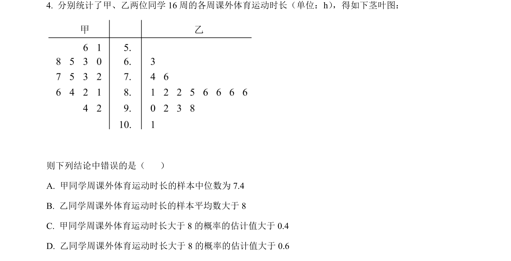
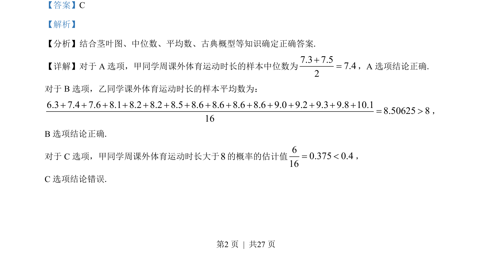
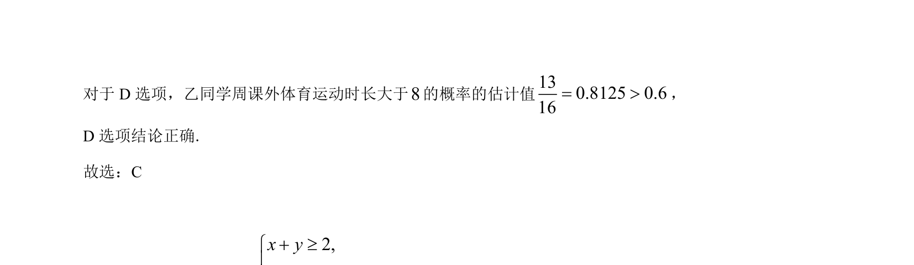

考点：茎叶图 中位数 平均数 古典概型

该题结合茎叶图，考查中位数、平均数的计算及古典概型的概率估计。


📄 原 PDF 第 2 页：
素材/真题/吉林/2008-2024·（吉林）数学高考真题/2022年高考数学试卷（文）（全国乙卷）（解析卷）.pdf
【答案】C 【解析】 【分析】结合茎叶图、中位数、平均数、古典概型等知识确定正确答案. 【详解】对于 A 选项，甲同学周课外体育运动时长的样本中位数为7.3 7.57.42+=，A 选项结论正确. 对于 B选项，乙同学课外体育运动时长的样本平均数为： 6.3 7.4 7.6 8.1 8.2 8.2 8.5 8.6 8.6 8.6 8.6 9.0 9.2 9.3 9.8 10.18.50625 816+ + + + + + + + + + + + + + += >， B选项结论正确. 对于 C选项，甲同学周课外体育运动时长大于8的概率的估计值60.375 0.416= <， C选项结论错误.